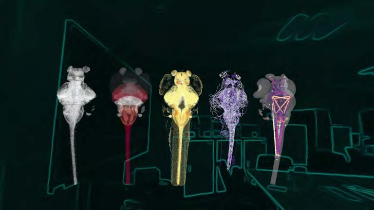
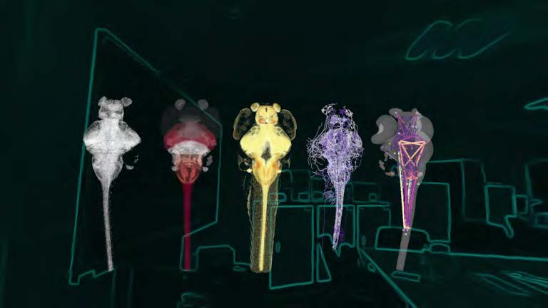

// Project Overview
2023–2024
"Zebrafish Brain Atlas: Immersive Visualization" — A cinematic scientific visualization of the zebrafish brain's developmental architecture.
This VR video production offers a monumental, walk-through tour of the zebrafish brain, mapping the spatial relationships of over 50 neuroanatomical regions. By blending high-resolution biological data with cinematic rendering, the project showcases developmental biology insights at an architectural scale.
The visualization serves as an immersive archive, allowing audiences to witness the complexity of life through a lens that bridges microscopic science with large-scale digital art.
 
